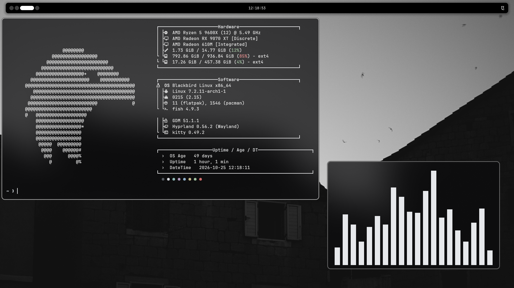
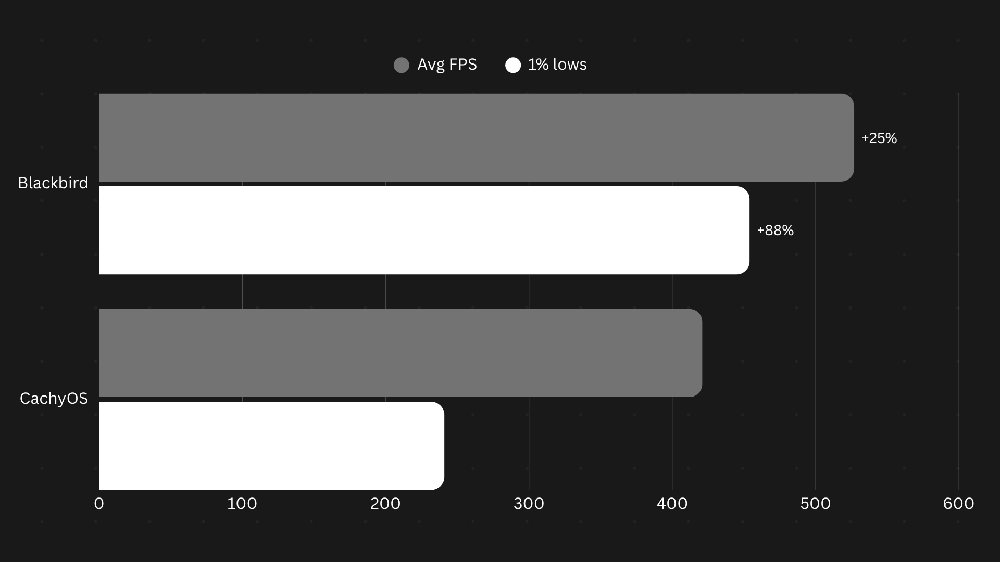

Blackbird Linux is built on Arch Linux, using Hyprland as its window manager and fish as its shell. A minimal software stack keeps Blackbird Linux lightweight and fast while maintaining a clean, streamlined experience.
Blackbird Linux uses Noctalia 5.3 for its UI layer. Noctalia keeps RAM usage low while maintaining a clean interface. Blackbird Linux uses a dark, frosted-glass design language with a one-bar, all-in-one workflow.
Less overhead. More frames. No compromises. Blackbird Linux is designed to keep your system lightweight, leaving more resources for the things you actually use.
Average FPS in Minecraft

| Processor | 64-bit x86_64 |
| Memory | 2 GB RAM |
| Storage | 15 GB available |
| Graphics | OpenGL 3.3+ |
| Firmware | UEFI recommended |
Blackbird Linux is designed to run on a wide range of hardware without unnecessary background overhead. Its minimal Arch Linux base, Hyprland window manager and streamlined software stack help keep system resources available for the applications that matter.